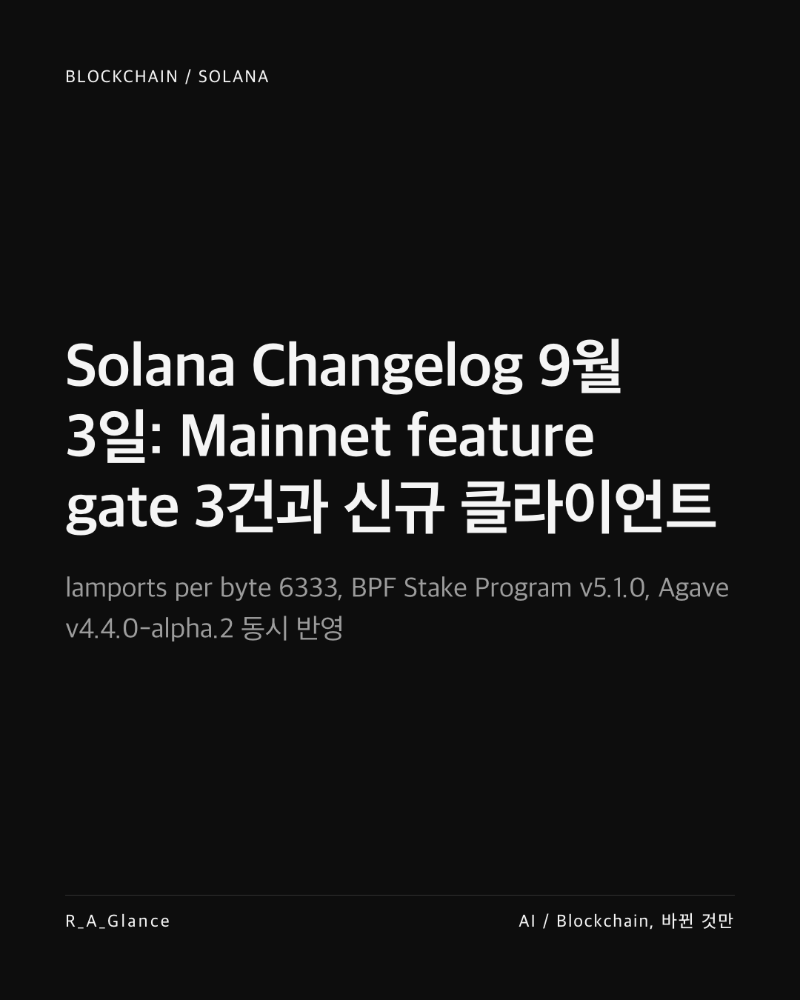
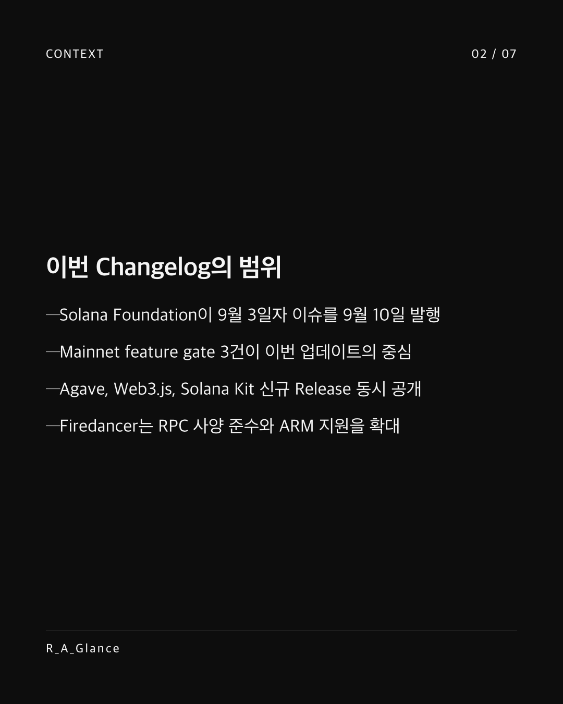
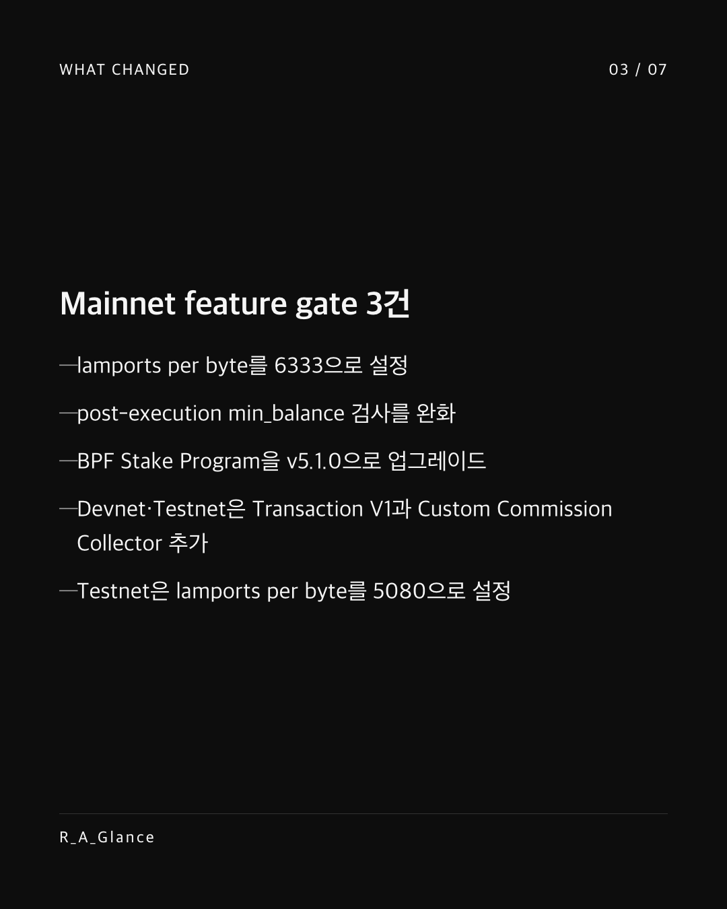
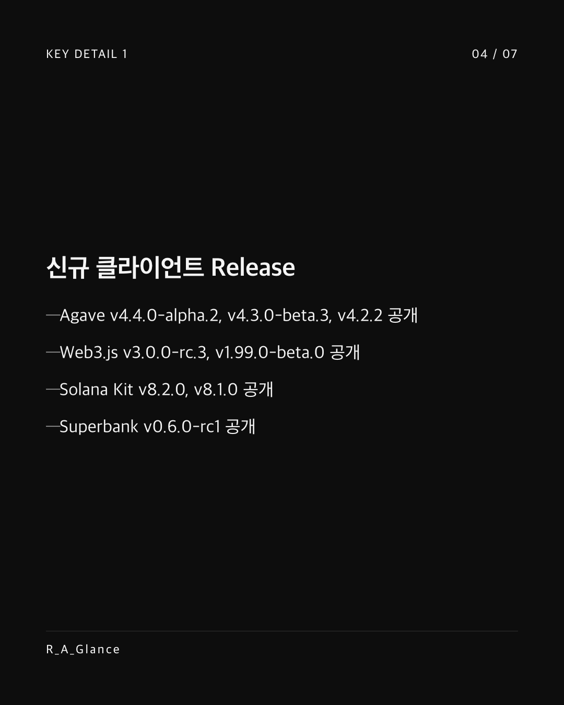
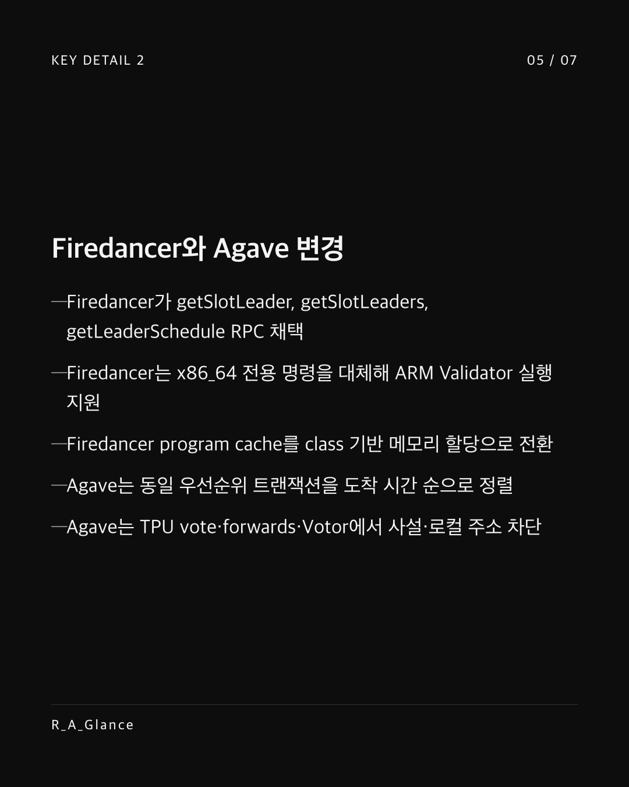
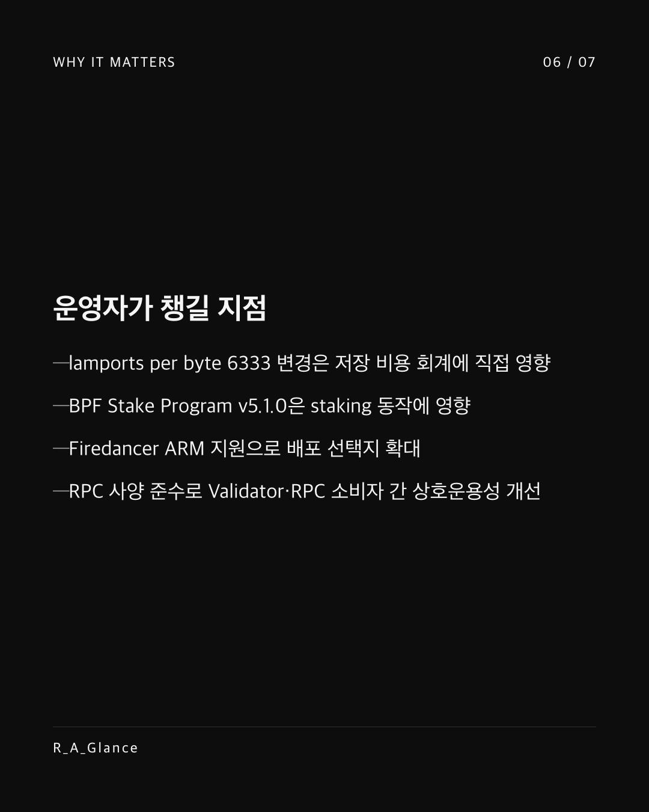
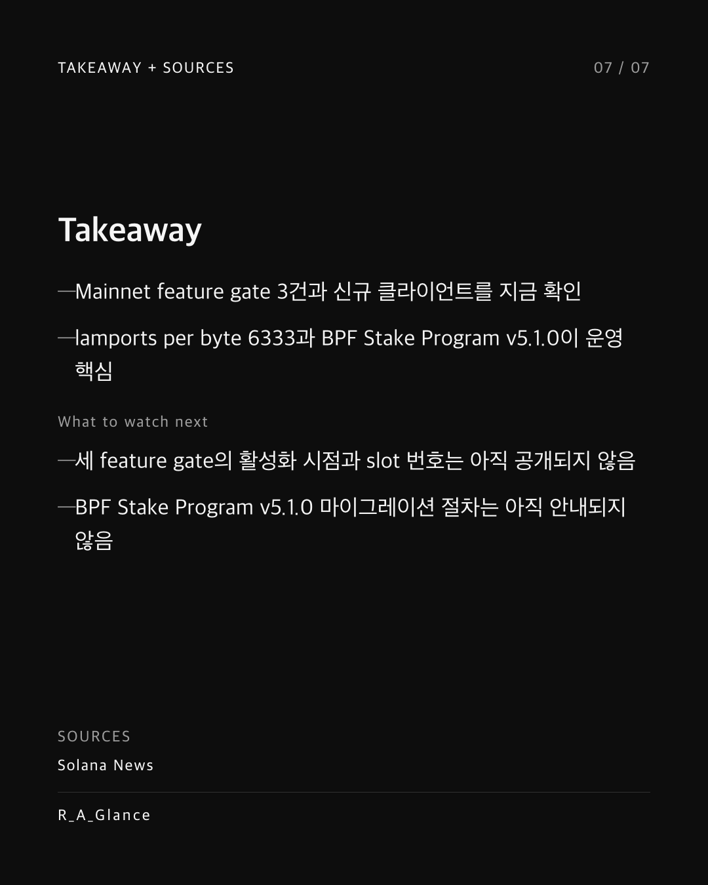

Solana 9월 3일 Changelog가 Mainnet feature gate 3건을 정리했다. lamports per byte가 6333으로 설정되고 post-execution min_balance 검사가 완화되며 BPF Stake Program이 v5.1.0으로 올라갔다. Devnet과 Testnet은 Transaction V1과 Custom Commission Collector를 추가했고 Testnet의 lamports per byte는 5080으로 설정됐다. 클라이언트 Release도 함께 나왔다. Agave v4.4.0-alpha.2, Web3.js v3.0.0-rc.3, Solana Kit v8.2.0이 공개됐다. Firedancer는 getSlotLeader, getSlotLeaders, getLeaderSchedule RPC를 채택하고 x86_64 전용 명령을 대체해 ARM Validator 실행을 지원한다. Agave는 동일 우선순위 트랜잭션을 도착 시간 순으로 정렬하고 TPU vote·forwards·Votor에서 사설·로컬 주소를 차단한다. 운영자는 lamports per byte 6333과 BPF Stake Program v5.1.0을 먼저 점검할 지점으로 둘 만하다. Sources: Solana News